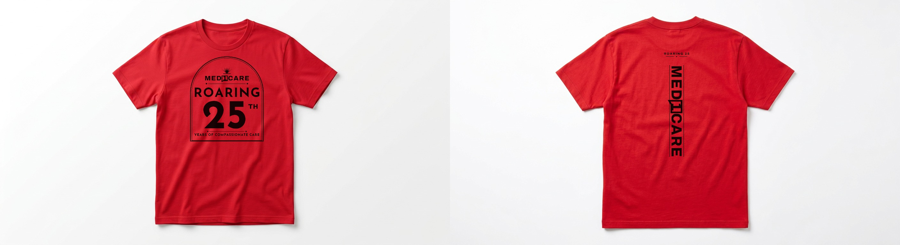
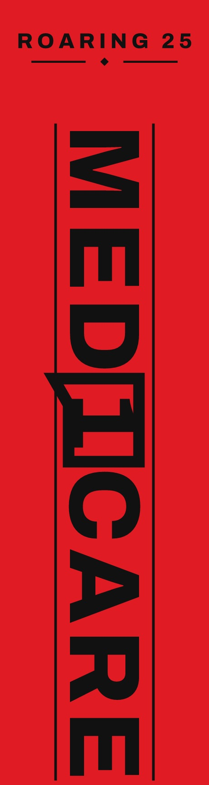
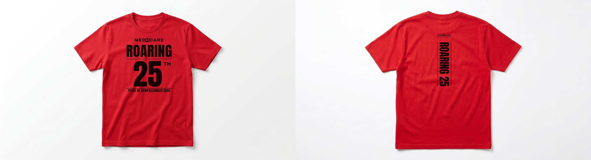
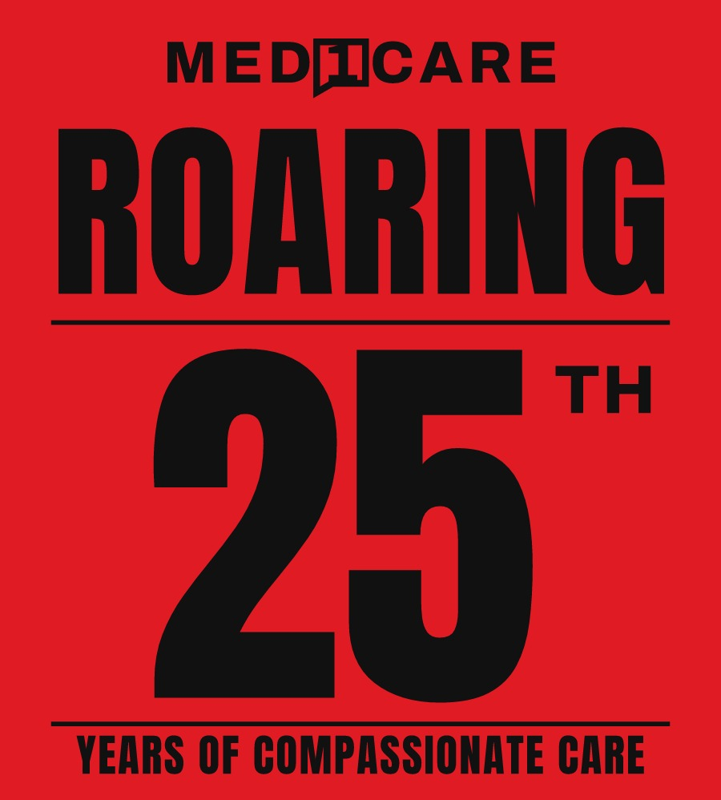
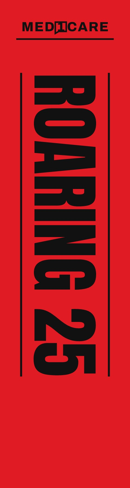

Med1Care · 25th Anniversary Apparel
Two directions for a one-colour black-on-red anniversary tee. Every letterform is set as vector outlines — no gradients, no hairlines, no faked type — so the art screens cleanly and still reads across a room. Built to replace the Jupmode proof.
A single arched plaque holds the wordmark, ROARING, the big 25th and the tagline in one clean badge. Deco details (sunburst, diamond-ended rules) nod to the original Victorian idea but at weights that actually print. This is the one to hand a patient or partner — it looks like a commemorative object, not promo merch.


Condensed block caps stacked tight: wordmark, ROARING, a hero 25th, then the tagline. Zero decoration, maximum contrast. Reads from across a lobby, photographs well, and prints with the fewest possible screen issues — the safest bet if the tee is going to a big, mixed audience.



| Item | Detail |
|---|---|
| Garment | Red tee, style 1717 |
| Ink | 1 colour — black. No halftones, no gradients, no knockout white. |
| Front placement | 11″ W × 12.2″ H, 2.3″ below collar |
| Back placement | 4″ W × 15″ H spine, 2.3″ below collar, plus nape mark |
| Minimum stroke | 3.5 pt at print size (thinnest rule in the art: 3.5 pt); smallest type 8 pt cap |
| Files | *.svg vector, type converted to outlines · *-300dpi.png sized at final print dimensions |
| Screen note | Single screen works for both. If they'd rather split it, the front reads fine as a 2-pull with the numeral flashed — but it isn't needed. |